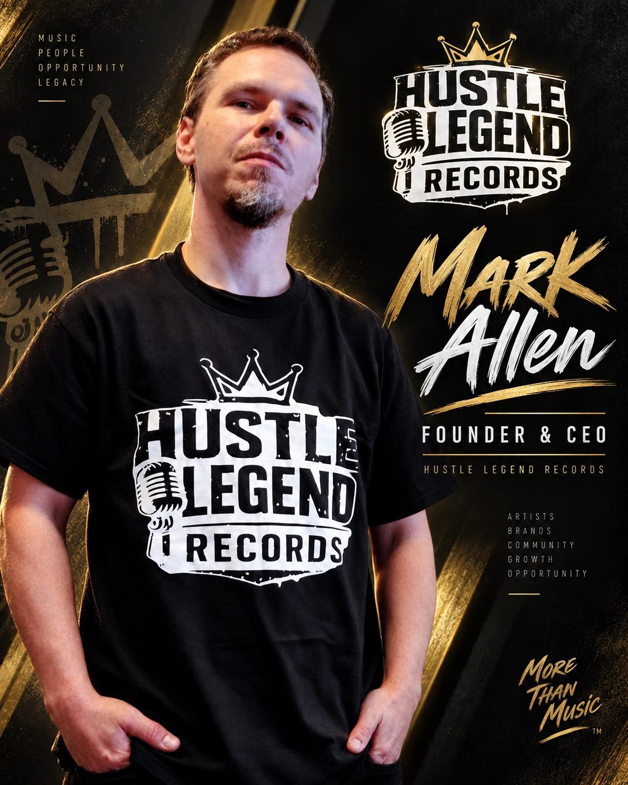
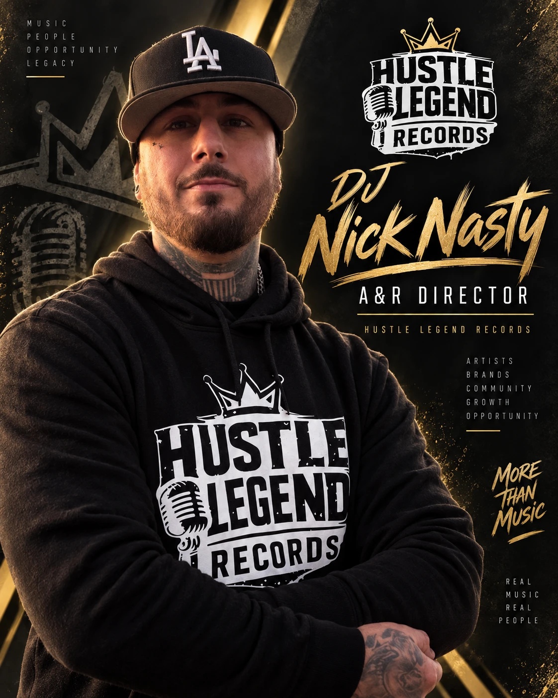
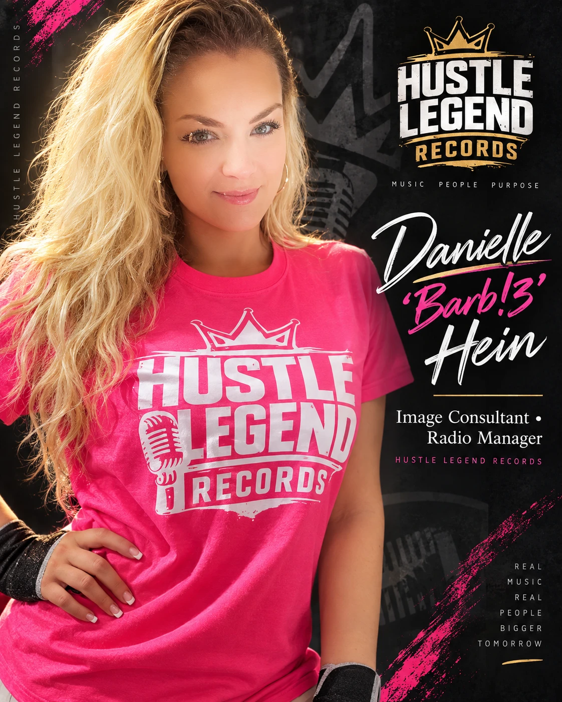
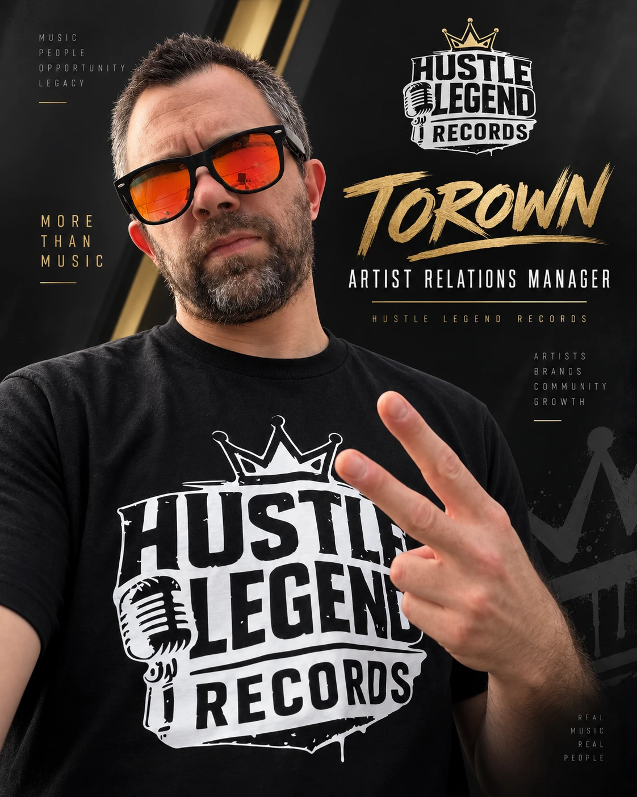
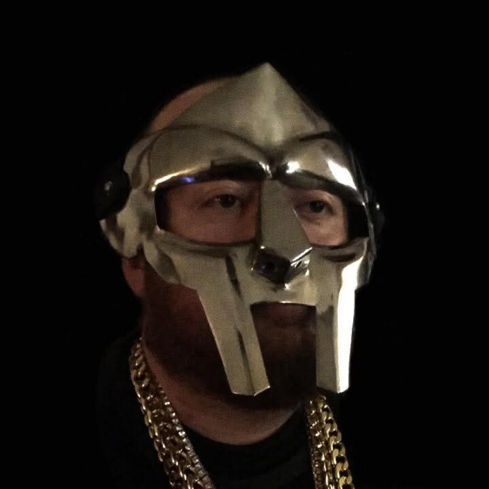

20-track story world
Explore all 20 tracks →Explore the album by chapter, theme, callbacks, lyrics and documented history instead of treating it like a flat tracklist.
Hustle Legend Records is an independent music company founded by artist and producer Mark Allen, building artists, producers, catalog, radio, licensing and direct-to-fan experiences around creative control and long-term ownership.

Spotify for Artists shows about 43K artist listeners, 919 saves and about 5K playlist adds worldwide during October 9, 2025–October 8, 2026. Values marked K are rounded. Follow the story, stream the music and join the audience.
HLR has depth, but the front door should be simple. Pick the lane that matches what you came for.
Start with Mark Allen, Born 2 Be A Legend, the 20-track story, reactions and the music itself.
Press facts, licensing, rights-aware catalog information, credits, milestones and direct business contact.
Create an artist profile and route one submission toward HLR radio, editorial, interview and licensing-readiness opportunities.
Mark Allen's 20-track debut is the current flagship release of Hustle Legend Records: a connected autobiographical project built around survival, family, confrontation, ownership and the return after five missing years.
Explore the album by chapter, theme, callbacks, lyrics and documented history instead of treating it like a flat tracklist.
Mark Allen’s Spotify for Artists audience report shows about 63K artist streams and about 43K listeners worldwide for October 9, 2025–October 8, 2026. These rolling artist figures are separate from B2BAL’s 51,186-stream September album milestone.
Independent coverage, reactions and outside listening give the era verifiable context beyond HLR's own pages.
From Home Studio to Hustle Legend Records — read the USA News feature →
October 3, 2026 · Contributor / branded feature.
HLR is building owned pathways for discovery, artist development, audience connection and business opportunities instead of depending on one outside platform to hold the whole relationship.
Hosted by No Filter Ty on Hustle Legend Records. Artist interviews, music reactions and independent hip-hop conversations.
Open the podcast station LIVEHLR RadioLabel-controlled programming and direct HLR-hosted radio copies.
Enter the station → INSTALLABLEHLR AppA lightweight home screen for radio, catalog, press, merch, licensing and the Artist Gateway.
Open the app → ARTISTSArtist GatewayA real intake path for artist profiles, submissions and opportunity routing.
Enter the gateway → STOREHLR MerchOfficial label and artist merchandise connected to the independent ecosystem.
Shop the label →The company side: direction, artist relations, A&R, image, radio and day-to-day growth.

Helps guide overall direction, structure and long-term growth across the HLR operation.

Founder, flagship recording artist, producer and catalog owner directing the current HLR era.
Enter Mark Allen's music →
Shapes feature pairings, mixtape direction, remixes and collaborations.
View official profile →
Shapes visual identity, promotion and radio management, with credited creative work inside the catalog.
View official profile →
Leads INVERTED TIME, overseeing guests, episode planning and the podcast’s creative direction.
Explore INVERTED TIME
Southern Illinois producer blending hip-hop, country rap, Southern influence and rock energy into “Soundtracks for Real Life.”
View official profile →
Recording artist featured on “Told U” and the artist-relations bridge across the HLR network.
View official profile →
Featured on Mark Allen’s “Kiss My Ass” and creator/host of “Mick Mondays” on YouTube.
Watch Mick Mondays →Featured on Mark Allen’s “Got A Problem,” with solo material available through Audiomack.
Explore the catalog →Hustle Legend Records was founded by Mark Allen as an independent home for music, creative development and owned business infrastructure. The goal is not to imitate a major label at smaller scale. It is to build direct systems that let artists and collaborators create, develop and pursue opportunities with clear rights and documented ownership.
Music and identity are developed without forcing every artist into one formula.
Masters, publishing, licensing and collaborator rights are documented instead of assumed.
Catalog, audience, radio, submissions, merch and business relationships are treated as durable assets.